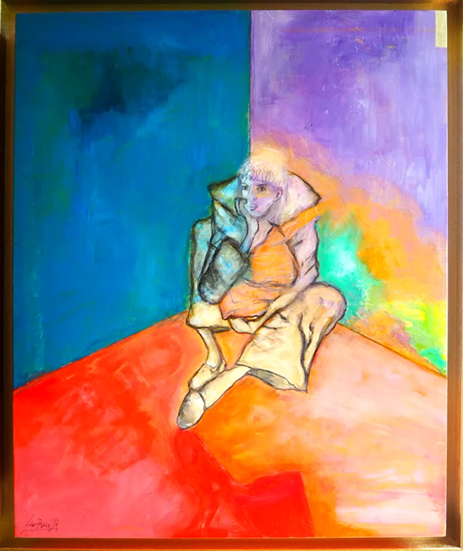

Peau d’âne
An exhibition about clothing, faces, and the cartography of intimacy, presented at Le Canapé in Gif-sur-Yvette.
Discover the exhibitionOfficial website of a contemporary painter and visual artist connected to Gif-sur-Yvette, near Paris. Explore paintings, installations, exhibitions, publications, and online galleries.
Ana Ruiz Llamazares develops a body of paintings and installations shaped by color, material, and imagination.
This official website brings together works, exhibitions, publications, and a slideshow to discover an artistic journey shown in Gif-sur-Yvette, Villebon-sur-Yvette, Palaiseau, and the Paris region.

An exhibition about clothing, faces, and the cartography of intimacy, presented at Le Canapé in Gif-sur-Yvette.
Discover the exhibition